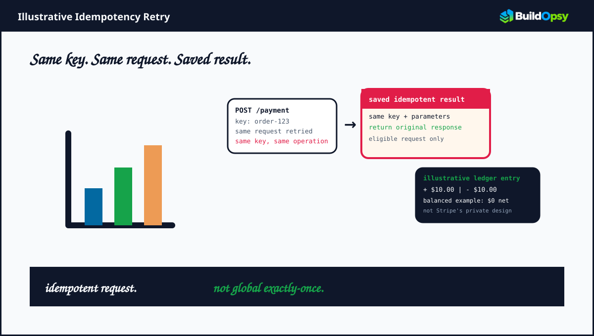
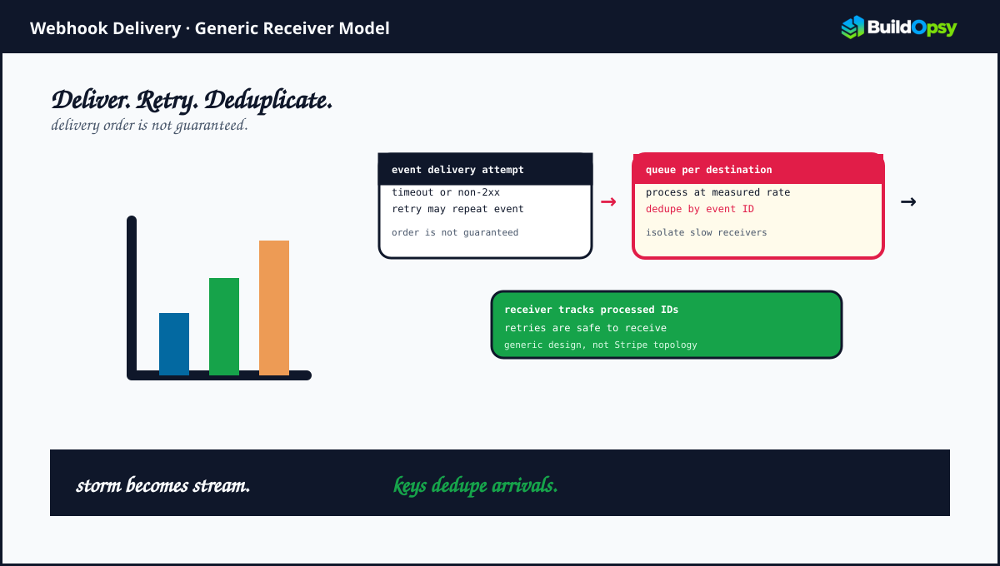

1. The Double Charge You Cannot Explain
A client can lose the response to a payment request without knowing whether the server completed it. Retrying with the same idempotency key lets a client safely repeat an eligible request without creating the operation again. Stripe documents this behavior for its API; the exact application still needs to distinguish a retry of the same operation from a new payment request.
Webhook delivery has a separate failure mode. Stripe says live-mode events can be retried for up to three days with exponential backoff, and delivery order is not guaranteed. Receivers need to identify duplicate events and process them safely. This is a correctness problem, not evidence of a particular Stripe outage or retry volume.
The network will retry exactly when you most wish it would not. That is not a bug. That is the spec.
2. Why Stripe Is the Right Autopsy
Stripe reported $1.4 trillion in total payment volume for calendar year 2024, up 38% year over year. That is dollar volume, not a count of payments. The disclosure does not provide an average payment size, request rate, retry rate, ledger entry count, or infrastructure bill. The rate estimates later in this article therefore use explicit scenario inputs.
Stripe's API documentation explains that an idempotency key lets a client safely retry an eligible request. For API v1, Stripe saves the first response after endpoint execution begins and may remove keys only after they are at least 24 hours old. Its webhook documentation says live events can be retried for up to three days and may arrive out of order. These are documented API behaviors; they do not establish Stripe's internal ledger or deployment topology.
Cost depends on the workload and architecture. Without a published transaction count and unit-cost data, an estimate of Stripe's own infrastructure spend would be invented. The model below describes how an operator can make a scenario instead.
3. Reconstructing the Machine
The following is a generic reference model, not a description of Stripe's private architecture. A payment API can validate a request, use a durable idempotency record to recognize a retry, and commit the money movement under the consistency rules required by the product. The client should receive the saved outcome when it repeats the same eligible request.
Systems often send notifications and analytics through asynchronous queues after the authoritative transaction commits. A receiver can track processed event IDs, tolerate duplicate delivery, and avoid relying on event order. The separation between the authoritative write and downstream work is a design option to evaluate against the system's correctness and latency requirements.
4. Idempotency: The Expensive Cache That Prevents Lawsuits
Stripe's current API v1 documentation says idempotency results may be pruned after they are at least 24 hours old. A request that reuses a key after its original result has been pruned can be treated as a new request. The documentation also says Stripe does not save a result when validation fails or a concurrent request conflicts before endpoint execution begins. Callers should generate unique keys for individual operations and preserve the same key when retrying that operation.
Do not treat idempotency as a best-effort cache. The system must preserve enough state to distinguish a retry from a new operation, and its expiration policy must be part of the API contract. A hypothetical duplicate volume can be calculated as requests per day × duplicate fraction; neither input is published in Stripe's 2024 volume announcement.
In a generic design, slow completion can make concurrent retries wait longer for the first operation's result. Measure that behavior from the actual service rather than assuming a particular lock, cache, or edge lookup exists inside Stripe.
5. The RPS Model: How Many Payment Events Does $1.4T Make
Stripe's $1.4T disclosure is dollar volume, so it cannot be converted into a payment rate without an assumed average payment size. For this scenario, assume $50 per payment and a 365-day year: $1.4T ÷ $50 = 28B payments/year; 28B ÷ 31,536,000 seconds = about 888 payments/second on average.
Now assume—without company telemetry—a 60× peak multiplier: 888 × 60 ≈ 53,300 payments/second. To illustrate fan-out, count one idempotency lookup, four ledger entries, two downstream events, and three webhook attempts (including retries): 10 modeled backend work units per payment. That gives about 533,000 work units/second at the modeled peak. If a separate 20,000 read requests/second is added, the scenario totals about 553,000 work units/second. These unlike operations are counted as work units for the scenario; they are not all API requests, synchronous events, or measured Stripe capacity.
| Modeled quantity | Assumption or arithmetic | Scenario result |
|---|---|---|
| Average payment rate | $1.4T ÷ $50 ÷ 31,536,000 seconds | ~888 payments/s |
| Peak payment rate | ~888 × assumed 60× multiplier | ~53,300 payments/s |
| Backend work per payment | 1 idempotency + 4 ledger + 2 downstream + 3 webhook attempts | 10 modeled work units |
| Payment-related work at peak | ~53,300 × 10 | ~533,000 work units/s |
| Total including modeled reads | ~533,000 + assumed 20,000 reads/s | ~553,000 work units/s |
6. The Cost Model: Where Money Costs Money
Stripe has not published the service-by-service costs, host counts, storage footprint, or retry rates needed to price its infrastructure. The earlier fleet estimate assigned dollar amounts to private-looking components without sourced inputs, so it has been removed.
For a system you operate, estimate the marginal monthly change with measured values: monthly request count × (baseline unit cost − deduplicated unit cost) − added edge/cache cost. Include storage retention, replication, webhook delivery, and observability only when you have measured rates and provider prices. The formula travels; unsupported plug numbers do not.
7. The One Million RPS Thought Experiment
This is a modeled scenario, not a Stripe cost estimate. Use one million requests per second for 30 days (2,592,000 seconds). Assume a baseline origin cost of $0.0000015/request: 1,000,000 × 2,592,000 × $0.0000015 = $3.888M/month. These unit costs are scenario inputs, not provider quotes or Stripe data.
For a second modeled shape, assume only 40% of requests reach the origin, at an assumed $0.0000011 per origin request, and add an assumed $400,000/month for edge and safety services: 400,000 × 2,592,000 × $0.0000011 = $1.14048M; plus $400,000 = $1.54048M/month. The 40% origin rate and all costs are assumptions, not measured deduplication or capacity results.
| At 1M RPS | Retry naive shape | Idempotency first shape |
|---|---|---|
| Origin requests | 1,000,000 per sec | 400,000 per sec after edge dedupe |
| Modeled rate | $0.0000015 per req | $0.0000011 per req |
| Core origin work | $3.89M | $1.14M |
| Edge and safety layer | Included | $400k |
| Modeled monthly total | $3.89M | $1.54M |
| Scenario difference | About $2.35M/month, or 60.4% lower under these inputs | |
return cached response
before ledger
balance zero
short lock wins
ledger is truth
72 hr backoff
off ledger
final word
This figure appears after the cost model on purpose. First price the duplicate. Then decide where to stop it.

8. How I Would Cut the Bill Without Cutting Correctness
Choose a correct idempotency path. Keep the key and operation result consistent enough that retries cannot create a second side effect. An edge cache can reduce latency in some architectures, but it must not weaken the correctness guarantee or become a claim about Stripe's unpublished design.
Make ledger entries compact. Represent fees, transfers and settlement as separate streams derived from the canonical payment event rather than writing every derived balance inline on the payment transaction. Keep per transaction ledger work minimal and fan out downstream
Isolate webhook retries per endpoint. Queue each webhook URL independently, apply circuit breaking per merchant and drop or back off noisy receivers without holding global delivery threads. One merchant webhook that never acks should not raise p99 for every other merchant.
Separate freshness classes. If the product permits it, serve non-critical balance views from a materialized representation with an explicit freshness contract, while routing decisions that require current ledger state to the authoritative store.
Commit fast to shrink the idempotency window. Keep ledger transaction time minimal by separating settlement processing from synchronous payment write path. A faster synchronous ledger trims idempotency lock duration which trims duplicate collisions which trims origin load in a loop.
Treat reconciliation as a product. Reconciliation should run continuously, compare ledger sum against downstream views and emit cost and correctness metrics per merchant and region. A ledger that cannot prove it balances is not a ledger. It is a hopeful log file.
9. The Verdict
Stripe looks boring in the best way. The API is predictable, the errors are explicit and the ledger never argues about arithmetic. The postmortem is not that Stripe charges too much or scales poorly. It is that financial infrastructure pays a correctness premium on every retry that other domains dismiss as noise.
Idempotency turns retries into cached responses. Double entry turns one user action into multiple auditable entries. Webhook semantics turn one payment into many delivery attempts. Each guarantee is worth the cost because the alternative is a double charge, a mismatched balance or a silent settlement failure. The win is not removing the guarantees. It is moving them to the cheapest place where they still hold.
A ledger cannot blink. Your edge can answer before the ledger even looks.
Sources and Method
Stripe's reported figure is 2024 total payment volume, not transaction count. The API and webhook statements below follow Stripe's current documentation; the page does not infer Stripe's internal architecture. The payment-rate and cost calculations are modeled scenarios. Inputs are shown beside each calculation and are not company telemetry.